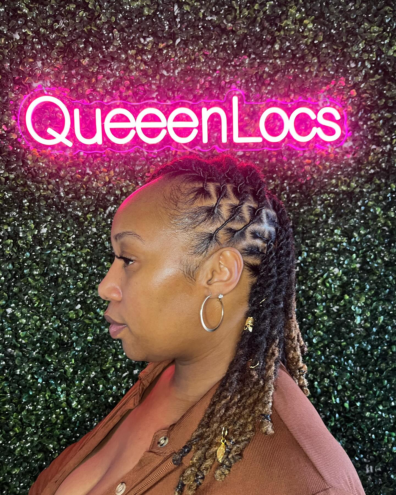

QueeenLocs
The Process of Queeen - Day 3
by Jamine Jordan - Jun 20, 2024
Greetings, Beautiful Souls!
It's Day 3 of my QueenLocs journey, and I'm thrilled to share my experiences and progress with you. Transitioning to locs is not just a hairstyle change; it's a lifestyle transformation. Each day brings new discoveries, challenges, and moments of joy. Let's dive into today's adventure!
Morning Routine: Nurturing the Roots
I started my day with a gentle scalp massage using a mixture of rose water and a few drops of tea tree oil. This not only helps in moisturizing my scalp but also keeps it refreshed and free from any itchiness. Following that, I used a light oil blend of jojoba and coconut oil to seal in the moisture.
Midday Reflections: Getting Comfortable with the Process

As I went about my day, I couldn't help but notice how much more comfortable I'm becoming with my locs. The initial stiffness is beginning to soften, and they're starting to take on their unique shape and character. I received a few compliments, which boosted my confidence and reaffirmed my decision to embark on this journey.